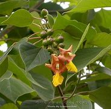

Basonym of Drug
Gambhari
Main Synonym
- Shriparni
- Kashmari
- Pitarohini
- Madhuparnika
- Madhuparni
Regional Name
- Bengali: Gamar
- Gujarati: Sivan
- Hindi: Gambhara
- Tamil: Gumadi
- Telugu: Puggumudu
Botanical Name
Gmelina arborea
Family
Verbanaceae
Classification (Gana)
Aacharya Charaka: Sothahara, Dahaprashamana, Virechanopaga
Aacharya Sushruta: Sarivadi, Bruhat Panchmoola
Aacharya Vagbhata: Sarivadi
External Morphology
20-30 meter high tree
Useful Parts
- Fruit
- Root
- Flowers
- Leaves
Important Phytoconstituent
- Beta-sitosterol
- Gmelinol
- Cutytyl
- Gmelanore
- Gummadiol
Rasa Panchak
- Rasa: Madhura, Kashaya, Tikta
- Guna: Guru
- Virya: Ushna
- Vipaka: Katu
Action
- Vatapittahara (Balances Vata and Pitta doshas)
Therapeutic Indication
- Deepan (Increases appetite)
- Bhedana (Laxative)
- Paachana (Digestive)
- Medhya (Increases cognitive strength)
Therapeutic Uses
- Raktapitta: The flower of Gambhari with honey is useful in diarrhea.
- Jwara: Cold infusion of Gambhari powder with sugar is useful in Paittik Jwar (fever).
- Sothahara: Root decoction with Pippali Churna is useful in inflammations.
Dose
- Decoction: 50-100 ml
- Fruit Powder: 1-3 gm
Formulations
- Dashmoola Kwath
- Dashmoolarista
- Kashmarya Taila
- Kashmarya Rasayana
- Kashmaryadi Paanaka
- Drakshadi Kwath
Adverse Effect
Not Known
Remedial Measure
Not required